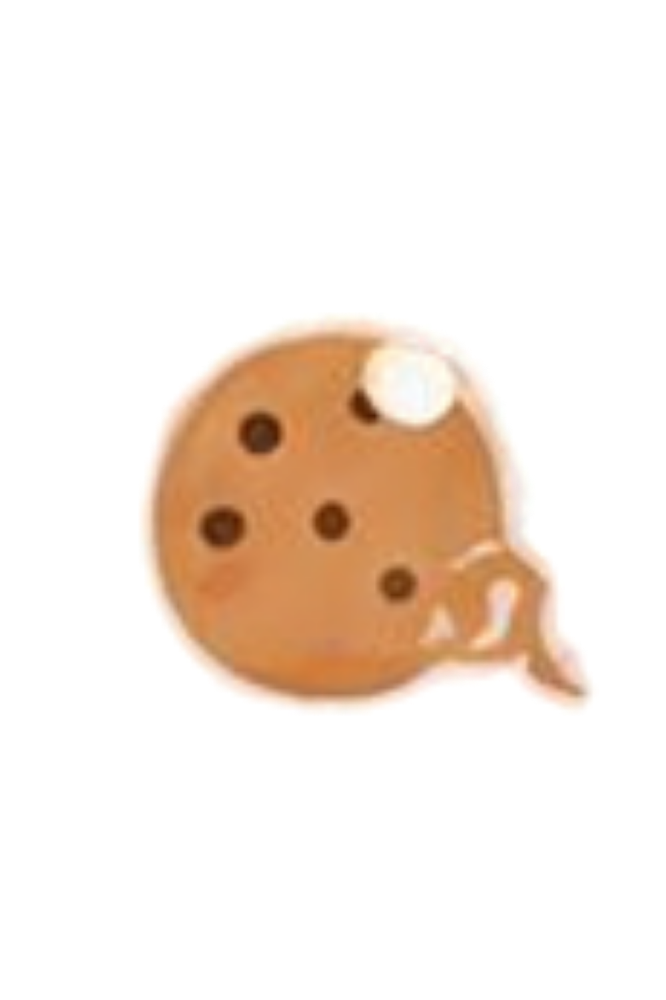

Ingredients
Centang bahan yang sudah kamu siapkan.
Cara membuat
Ikuti langkah sederhana berikut untuk membuat cookie hangat.
✦

Cookie FinderCentang bahan yang sudah kamu siapkan.
Ikuti langkah sederhana berikut untuk membuat cookie hangat.